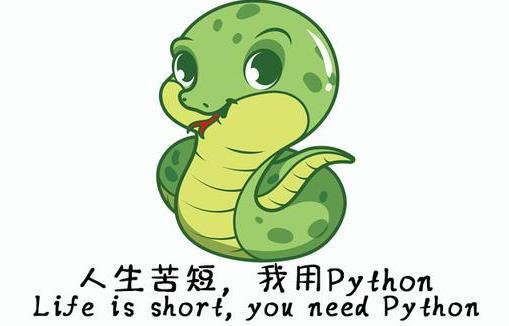
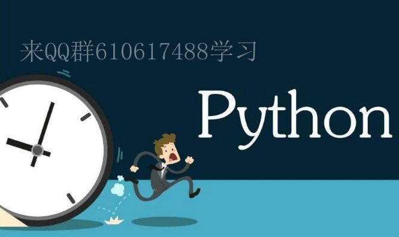

原文连接:https://www.cnblogs.com/baijinpython/p/12079575.html
一、Python是什么
相信混迹IT界的很多朋友都知道，Python是近年来最火的一个热点，没有之一。从性质上来讲它和我们熟知的C、java、php等没有什么本质的区别，也是一种开发语言，而且已经进阶到主流的二十多种开发语言的top 3（数据源自最新的TIOBE排行榜）。
来头不小啊！二十多种主流的开发语言，我该从哪一个开始呢？ 人生苦短，我用 python！
二、Python的由来和发展趋势
Python的前世源自鼻祖“龟叔”。1989年，吉多·范罗苏姆（Guido van Rossum）在阿姆斯特丹为了打发无聊的圣诞节，决心开发一个新的脚本解释程序，自此Python和创始人“龟叔”开始进入公众视野。他希望这个新的叫做Python的语言，能符合他的理想：创造一种C和shell之间，功能全面，易学易用，可拓展的语言。
1991年，第一个Python编译器诞生。它基于C语言实现，并能够调用C语言的库文件。后面历经版本的不断换代革新，Python走到了非常具有里程碑意义的一个节点，即2004的2.4版本诞生了目前最流行的WEB框架Django！六年后Python发展到2.7版本，这是目前为止2.x版本中最新且较为广泛使用版本。
2.7版本的诞生不同于以往2.x版本的垂直换代逻辑，它是2.x版本和3.x版本之间过渡的一个桥梁，以便最大程度上继承3.x版本的新特性，同时尽量保持对2.x的兼容性。
因此3.x版本在2.7版本之前就已经问世，从2008年的3.0版本开始，python3.x系呈迅猛发展之势，版本更新活跃，一直发展到现在最新的3.7版本。3.7版本也是目前3.x系列中主流且广泛使用的版本，后续相关程序的demo，默认均基于3.7版本展开。

三、Python 2 VS Python 3
许多初学者会纠结于从2.x版本还是3.x版本开始python学习之路。这里简要对比下个人学习了解到的两者的差异：
3.x版本中 PRINT IS A FUNCTION，使用起来更简单方便；
33.x版本中默认使用unicode编码，妈妈再也不用担心你的程序编码问题了；
33.x版本中某些库进行了改名，具体还有待在后续学习中深入展开；
3目前3.x版本还不能完全支持Twisted module，这恐怕是3.x版本中最大的遗憾。也不要过于纠结这点，据说官方正在弥补这个不足，同时也相信能有办法解决的：）
长江后浪推前浪，python的未来是属于3.x系列的，官方宣布2020年之后不再支持2.x系列中最nb的2.7版本，2.x版本将逐渐寿终正寝，最终被铭刻在开发语言的丰碑上。
所以学习3.x版本没错的！
四、Python的优缺点
二十多种主流开发语言，python何以能在20多年间以如此迅猛之势横扫七大洲八大洋呢？这都是它自身优良的特性决定的.
Python优点：
“优雅”、“明确”、“简单”
这是python的定位，使得python程序看上去简单易懂，初学者容易入门，学习成本更低。但随着学习的不但深入，python一样可以满足胜任复杂场景的开发需求。引用一个说法，Python的哲学是就是简单优雅，尽量写容易看明白的代码，尽量写少的代码。
开发效率高
python作为一种高级语言，具有丰富的第三方库，官方库中也有相应的功能模块支持，覆盖了网络、文件、GUI、数据库、文本等大量内容。因此开发者无需事必躬亲，遇到主流的功能需求时可以直接调用，在基础库的基础上施展拳脚，可以节省你很多功力和时间成本，大大降低开发周期。
无需关注底层细节
Python作为一种高级开发语言，在编程时无需关注底层细节（如内存管理等）。
功能强大
Python是一种前端后端通吃的综合性语言，功能强大，php能胜任的角色它都能做，至于后端如何胜任，需要在后续学习中逐步领悟。
可移植性
Python可以在多种主流的平台上运行，开发程序时只要绕开对系统平台的依赖性，则可以在无需修改的前提下运行在多种系统平台上，具体有待后续学习中深入展开。

一个硬币总有两面，那么Python有缺点吗？答案是肯定的，总结如下：
Python缺点：
代码运行速度慢
因为Python是一种高级开发语言，不像c语言一样可以深入底层硬件最大程度上挖掘榨取硬件的性能，因此它的运行速度要远远慢于c语言。另外一个原因是，Python是解释型语言，你的代码在执行时会一行一行地翻译成CPU能理解的机器码，这个翻译过程非常耗时，所以很慢。而C程序是运行前直接编译成CPU能执行的机器码，所以非常快。
但需要注意的是，这种慢对于不需要追求硬件高性能的应用场合来讲根本不是问题，因为它们比较的数量级根本不是用户能直观感受到的！想想程序执行所需的时间数量级？例如开发一个下载MP3的网络应用程序，C程序的运行时间需要0.001秒，而Python程序的运行时间需要0.1秒，慢了100倍，但由于网络更慢，需要等待1秒，用户体验几乎没有差别，除非你用非常精确的计时器来计时。
五、Python的适用领域
Python典型的适用领域如下：
云计算开发
云计算领域最火的语言，典型代表openstack。
web开发
众多优秀的web框架，众多优秀的大型web站点（Youtube,instagrm,豆瓣等）均基于python开发。
系统运维
各种自动化工具的开发，CMDB、监控告警系统、堡垒机、配置管理&批量分发工具等均可以搞定。这是自己需要重点学习的领域。
科学计算、人工智能
据网上了解用于围棋大战的谷歌阿发狗就使用了python开发（但估计只是部分而已）。
图形GUI处理
暂时没多少体会，后续领悟吧。
网络爬虫
这年头网络爬虫无处不在，很多都是基于python开发，包括谷歌的爬虫。这是爬虫工程师的必备工具。
六、哪些地方在用Python
来几个鲜活的知名公司应用案例，以示敬意：
谷歌：Google app engine、google earth、爬虫、广告等
Youtube: 世界最大的在线视频网站基于python开发，好强大
Instagram：美国最大的图片分享网站，全部基于python开发
facebook：大量的基础库基于python开发
Redhat：yum包管理工具基于python开发